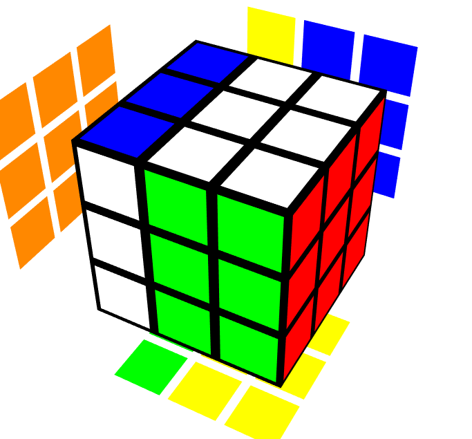
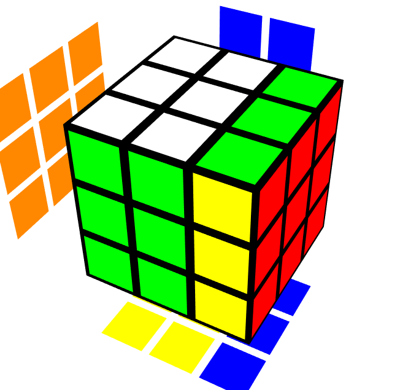
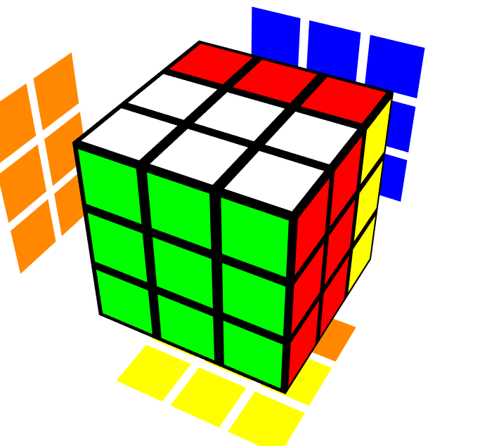
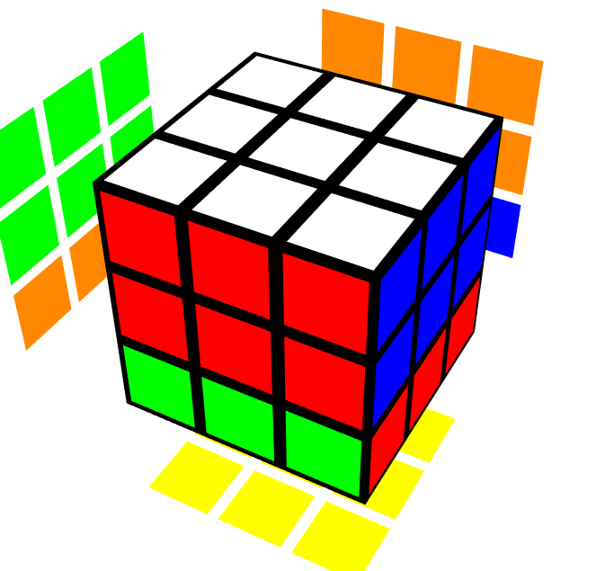
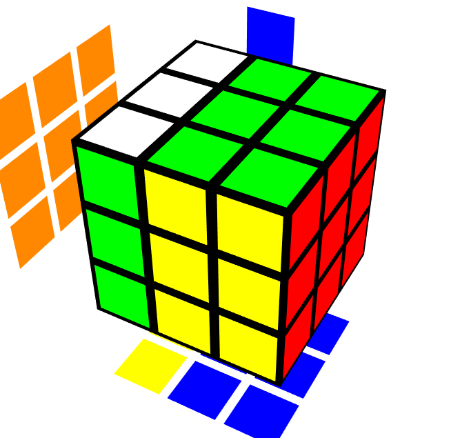
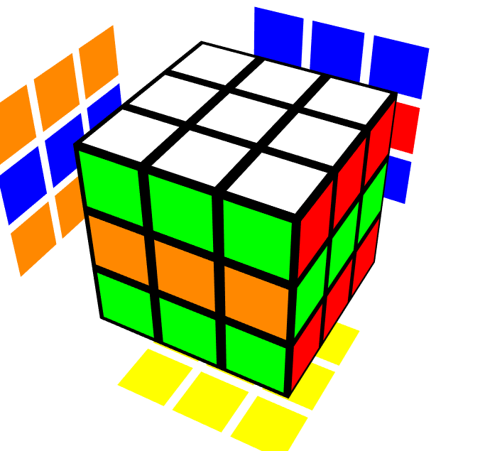
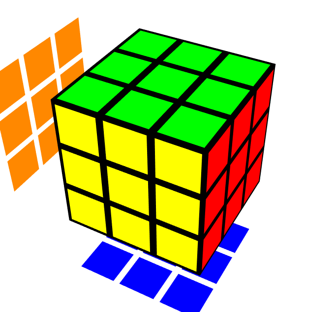
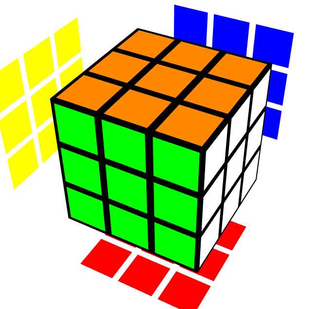

RICK: A-a-a-a-alright Morty, lemme e-explain some things, l-lay out
so-some ground rules s-so y-y-ou don't go all messing things up w-when
you t-try and solve the cube, Morty! Y-yy-y-y-you know how that cube is,
one second you're just t-t-urning it all h-h-happy like a-a-a-and then
before you know it i-i-it's got colors all over the place! We don't want
that, Morty! *burp* W-w-w-we want all the colors t-to be on the right
sides, Morty, but before we do that we gotta lay out some ground rules,
Morty!
MORTY: O-o-oh jeez Rick, th-that sounds complicated!
RICK: Wwell Morty i-i-if you wanna leave y-y-ou can go at any time, j-just
click on that b-b-b-back button next to any of the headings o-on this page
a-a-and it'll take you back to the main page Morty!
RICK: O-o-okay Morty, first things first. See that i-i-iimage up there?
That's what th-th-the demo pictures will look like, Morty! See right now
i-i-it's solved, Morty! Do you see it?
MORTY: O-o-oh-oh-oh wow Rick, th-that's really s-
RICK: I-i-it's a work of art Morty! Just l-l-look at the perpendicularity
of its sides, Morty! The equality of its measures! Th-they might've taken
Pirates of the Pancreas from me b-b-b-but th-they'll never take my cube,
Morty!
RICK: W-w-w-we gotta teach this fella h-how to read cube notation, Morty!
MORTY: O-o-oh-oh okay Rick, h-h-how do you want to do that?
RICK: W-w-well actually I was th-thinking, and- *burp* I rather spend a
y-year playing J-j-jerry's stupid balloon game than explain n-n-notation
to someone. *drink*
MORTY: B-b-b-b-but Rick, w-w-we gotta teach th-th-this person.. thing h-how
t-t-to read cube notation!
RICK: Y-y-yeah yeah Morty, g-g-get me that box over there in the corner,
th-the- one n-next to the quantum carburetor.
MORTY: O-o-oh-ohkay Rick, h-
RICK: Alright, this ou-*burp*-ghta do it *pushes button*
*POOOF*
MEESEEKS: Hi, I'm Mr. Meeseeks, look at me!
RICK: Y-y-y-yeah yeah Mr. Meeseeks, can you explain cube notation to this
fella here?
MEESEEKS: Ohhhhhhhhh, can dooooooo!
MEESEEKS: Here's a handy dandy table showing the basic moves you can do
and what their corresponding letters are in cube notation! As you can
see, single letters usually correspond to single 90 degree clockwise
face turns! You can also use these letters to refer to faces!
If I say "U layer" or "U face", it refers to the face that would get
turned clockwise if I were to do a "U turn"! And if I say UB edge, that
refers to the edge piece with stickers on both the U and B faces!
(there's only one edge that that can be!) And if I say UFR corner,
that refers to the corner piece with stickers on the U, F, and R faces!
This lets us uniquely identify pieces on the cube! I'm Mr. Meeseeks,
look at me!
| Here's the letter in cube notation... | U | L | F | R | B | D |
| And heeeeere's what the corresponding move looks like! | |
 | |
 |  | |
| Here's the letter in cube notation... | u or Uw | l or Lw | f or Fw | r or Rw | b or Bw | d or Dw |
| And heeeeere's what the corresponding move looks like! |  |  |
 |
 |  |
 |
| Here's the letter in cube notation... | M | E | S | x | y | z |
| And heeeeere's what the corresponding move looks like! |  |
 |  |
 |  |
 |
RICK: O-o-okay Morty, now that m-m-my eardrums are working again, why
don't you define a couple of terms for this fella s-s-so we don't have to
explain them later. *drinks*
MORTY: Oh-ohohokay Rick, here g-g-goes...
| H-h-h-ere's the fancy word | A-a-a-a-aand here's what it m-means |
| Alg | Short for a-a-algorithm. It's just a-a-a memorized sequence of m-m-moves that you use when solving. |
| Corner | I-i-iit just means the pieces on the corners of the cube, th-the ones with 3 stickers on them. |
| Edge | These a-a-are just th-the edge things, yknow? Th-the pieces b-b-between the c-c-orner pieces, with t-t-two stickers on them instead of three. |
| Center | There aare o-only six of these, and they're i-iin the centers of each face. They o-only have one sticker. |
| Orientation | O-o-o-orientation is just like, th-the way a piece is facing,
yknow? L-l-like, if y-y-you had an e-edge piece on the U face w-w-with
white on top a-a-and blue on the side, and then flipped it s-s-so that
white would be on the side and b-b-blue on the top, th-then you would
have changed i-iit's orientation, yknow? E-e-edge pieces only have 2
orientations, while corner pieces h-have 3, s-s-sin- RICK: Since they have 3 stickers, Morty! Jeeez Morty, h-how long does it take for you to e-e-explain orientation Morty! I-i-it's just the way thingies are t-t-wisted Morty! |
| Permutation | P-p-permutation is like, th-the position of a piece on the cube, yknow? S-s-since the centers don't shift position r-relative to each other, y-y-y-you can figure out if a piece i-is permuted correctly b-by looking at the c-c-centers it's next to, yknow? S-s-o if a piece w-with yellow, blue, a-a-and red stickers w-was d-d-d-iagonally adjacent to the yellow, blue, and red centers, i-i-iit'd be permuted correctly, e-e-e-ven if the stickers d-d-on't line up with the centers, okay? Jeez, e-e-explaining this stuff is hard! |
Credits: Images thanks to alg.cubing.net. Genius of Rick and Morty thanks to God (RIP, God. You did good.).